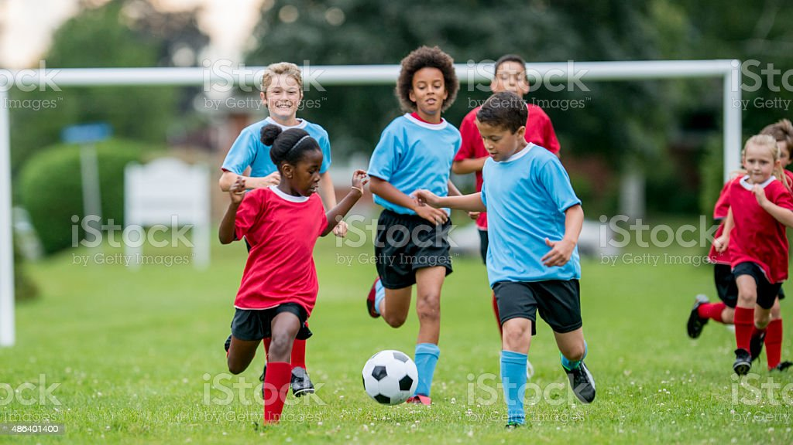

Why kids throughout all schools benifit from physical activites
One of many benifits of physical activity is the focus that kids get after
doing a work out. This boost in focus can make kids get better grades as
tests will be easier to take and classwork will be done easier as well

Students will gain other things not only an enhanced focus it also makes
students have a healthier habit of doing a physical activity rather than
wasting time doing something meaningless like screen time.